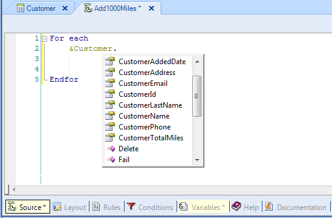

Every variable based on a business component type of a transaction, provides one property per each transaction attribute. Let's suppose we define the following transaction as Business Component (by setting its Business Component property = True):
Customer
{
CustomerId*
CustomerName
CustomerAddress
CustomerPhone
CustomerEmail
CustomerAddedDate
CustomerTotalMiles
}
Accordingly, a business component data type of the Customer transaction is automatically created in the KB and we are able to define in any object, a variable of the new type created. Thus, in a procedure we define a variable named &customer based on the Customer type, and in the procedure source we will use the &customer variable and study about its properties. Let's propose the following scenario: By way of promotion, the travel agency want to increase 1000 miles for each customer. So, what we should do? Browse all the customers stored, and update the total miles of each one of them. We need to write in the procedure source a For Each command (X Evolution 2) to navigate the CUSTOMER table. A For each command must always contain at least 1 attribute in its body for GeneXus to determine the base table to be navigated by the For each. Which attribute could we reference? And how can we update the customer total miles for each customer? The following image shows the procedure source with the For each command and the &customer variable included inside it:  We can see that when we type a dot following the variable name, GeneXus offers 2 types of elements we can select:
We select the Load method and in this case the primary key value we include inside the parenthesis is the CustomerId attribute, because our objective is to navigate the CUSTOMER table through the For each command and CustomerId makes CUSTOMER the base table of the For each since for the time is the only attribute present in it. Then, for each customer navigated we have the CustomerId value (as well as the rest of the attributes that belong to the CUSTOMER extended table), and we use it as parameter to load in the &customer variable, each customer data: For each &Customer.Load(CustomerId) Endfor Once the navigated customer is loaded into memory, all we need to do is modify the customer’s total miles and save the changes. Let’s write the 2nd instruction inside the For each. We type ampersand and all the variables are offered. We select the &Customer variable, we type dot, and all the available methods and properties are offered. We select the CustomerTotalMiles property or attribute, and we assign to it 1000 miles more than the value it already has: For each &Customer.Load(CustomerId) &Customer.CustomerTotalMiles += 1000 Endfor We can assign values only to the same attributes that are editable on the transaction’s form (it means, not to infered attributes neither attributes defined as global formulas). Now we must save physically this update, so we apply the save method to the &customer variable: For each &Customer.Load(CustomerId) &Customer.CustomerTotalMiles += 1000 &Customer.save() Endfor When the save method is executed, the rules defined in the transaction and the automatic validations done by the transaction are triggered. In case of error rules or automatic validations are triggered, the texts corresponding to what happened is loaded into memory in a collection. We can run through and process this collection. We will not be showing that in this example. Let’s now determine if the saving operation was actually successful. If it was successful, we execute Commit; if not, we execute Rollback:
For each
&Customer.Load(CustomerId)
&Customer.CustomerTotalMiles += 1000
&Customer.save()
if &Customer.success()
commit
else
rollback
endif
Endfor
Finally our objective is completely developed.
|